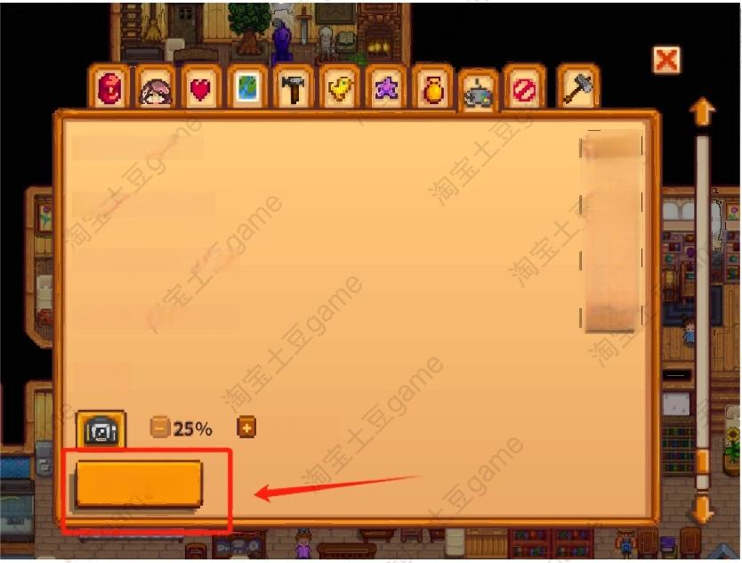
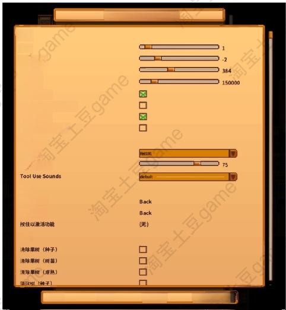
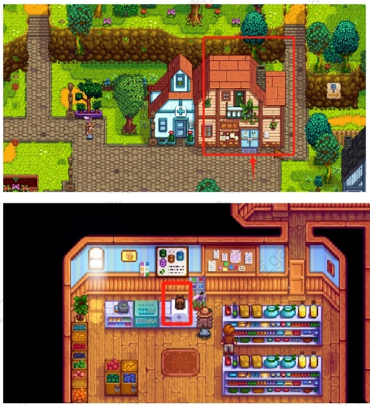
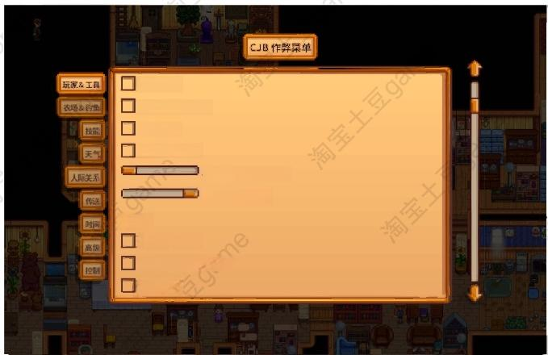
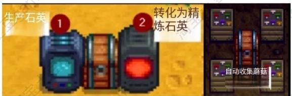
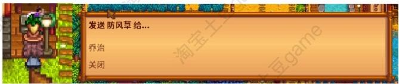
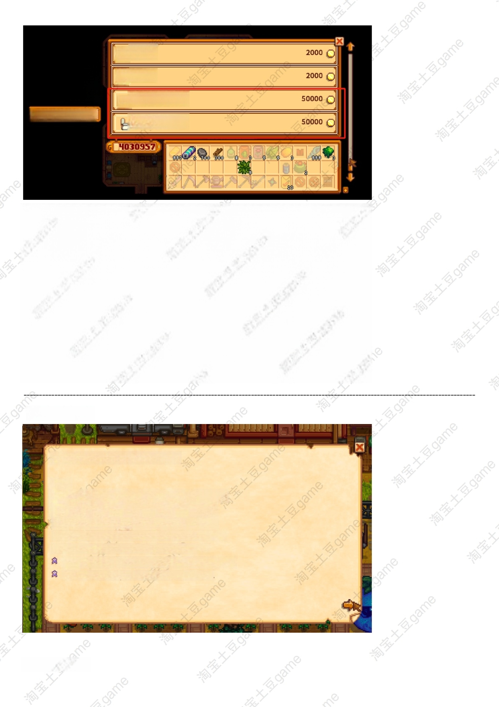
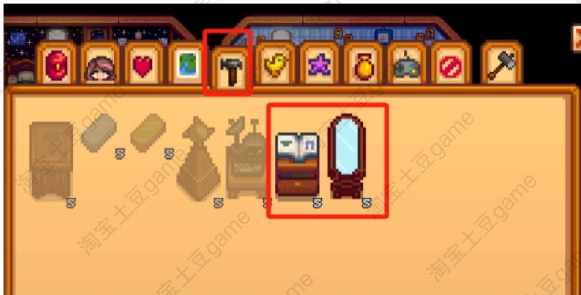

工具 Mod 使用说明 · 基础版
🛠️ Mod 基础操作
在星露谷游戏中，所有设置里打勾/打叉（❎）就代表已选中。
提示：请认准【淘宝土豆game】，我们会一直维护和更新；盗版店家无维护、无更新、无有效服务。
2拖拉机
默认快捷键：打开菜单快捷键是 Z
获取与使用
- 从 Robin 那里购买拖拉机车库（包含拖拉机），等她建好后即可使用。
- 上拖拉机后，在工具栏上选择工具、种子或肥料，然后驾驶即可。
- 按 退格键（可配置）可以将拖拉机召唤到您当前的位置。
Mod 菜单可设置项
- 拖拉机的目标距离、范围、车速、吸附半径、建造价格
- 是否需要建造材料 / 未建造车库时是否可召唤拖拉机 / 拖拉机上是否无敌
- 高亮显示距离（调试用）、引擎音效及音效大小
- 召唤拖拉机 / 收回拖拉机 / 斧头等键位自定义


3更大的背包
在杂货铺皮埃尔处，柜台右边购买使用。

4CJB作弊菜单 / CJB物品作弊菜单
CJB 作弊菜单
按 P 键打开，ESC 键关闭。包含很多功能，可自行查看，常用的有：
- 无限体力 / 武器无冷却时间 / 一击必杀 / 每日运气最大
- 移动速度增加（默认）/ 背包栏大小：48
- 工具类：喷壶永不干涸、一砍即倒（一击即碎）、镰刀收获
CJB 物品作弊菜单
按 I 键打开，ESC 键关闭。

5自动化
箱子与机器制品挨在一起，便可实现自动收取和自动添加物品。
也可在模组菜单里设置相关功能选项。

6更好的邮件
站在邮箱面前，选择物品后点击邮箱，即可选择将物品寄出给村民。

7随意更改样貌
去 Robin 那里购买配方，然后制造出镜子和目录，即可自由更改角色样貌。
此外，双人床、儿童床、服装目录（配方）、定制魔镜（配方）等也可从对应家具/配方商人处获取。


8更好的祝尼魔
可查看祝尼魔进度：{Percentage}%
任务奖励
- 给它们 3 杨桃 → 会有更多的祝尼魔当你的帮手
- 给它们 40 纤维 → 祝尼魔就能在下雨时工作
- 给它们 2 太阳精华 → 祝尼魔就能在晚上工作
- 给它们 5 金锭 → 祝尼魔小屋需要的材料会变少
- 给它们 6 动物毛 → 祝尼魔可以在冬天工作
- 给它们 2 虚空精华 → 祝尼魔可以清理枯萎的作物
- 给它们 10 椰子 → 祝尼魔会给你的土地浇水
其他未列出的 mod 均为自动安装。